Rudolf Reiter
I am a postdoctoral researcher specializing in advanced controls, optimization, machine learning, and robotics.
My current work takes place in the
Robotics and Perception Group
under Prof. Davide Scaramuzza in Zürich, Switzerland. A key focus of my research is on
learning- and optimization-based motion planning and control for autonomous systems,
particularly model-based reinforcement learning approaches that embed predictive
planners into RL policies.
Between 2021 and 2024, I pursued my Ph.D. at the University of Freiburg, Germany in the
Systems Control and Optimization Laboratory
with Prof. Moritz Diehl.
My thesis, titled “Optimization-Based Motion Planning and Obstacle Avoidance for Autonomous Driving and Racing”,
was funded by the prestigious
Marie-Skłodowska Curie Innovative Training Network
and supervised by Prof. Dr. Moritz Diehl.
In this work, I used numerical and combinatorial optimization techniques,
aided by machine learning methods, to address the computational demands of autonomous driving.
During my doctoral studies, I collaborated with leading research institutions and industry labs,
including IMT Lucca under Prof. Dr. Alberto Bemporad, the
Mitsubishi Electric Research Laboratories
in Cambridge, MA, and ETH Zürich with Prof. Dr. Melanie Zeilinger.
Prior to my Ph.D., I earned a Master's degree in Electrical Engineering
(with a focus on control systems) from Graz University of Technology, Austria, in 2016.
I then built several years of industry experience: first as a control systems specialist at
Anton Paar GmbH
(2016–2018), and later as an applied scientist at the
Virtual Vehicle Research Center
(2018–2021). Alongside my research activities,
I was also a member of the
Autonomous Racing Graz
team from 2021 to 2024, competing in real-world autonomous racing challenges.
Below, you can find further information such as a CV, a list of my publications and public talks.
Publications
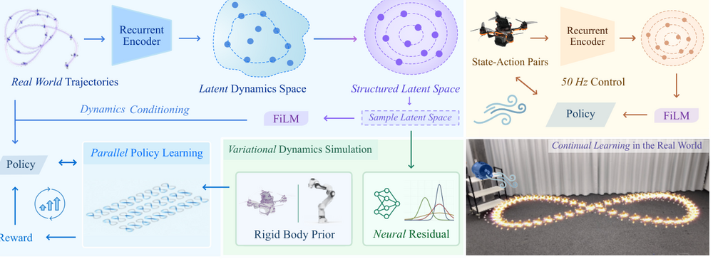
Jiaxu Xing, Zhiyuan Zhu, Yunfan Ren, Ismail Geles, Yifan Zhai, Rudolf Reiter, Davide Scaramuzza
arXiv, 2026
Paper / Video /
@Inproceedings{xing_continual_2026,
author = {Jiaxu Xing and Zhiyuan Zhu and Yunfan Ren and Ismail Geles and Yifan Zhai and Rudolf Reiter and Davide Scaramuzza},
title = {Continual Robot Policy Learning via Variational Neural Dynamics},
year = {2026},
month = {June},
booktitle = {arXiv},
url = {https://arxiv.org/abs/2606.27353},
}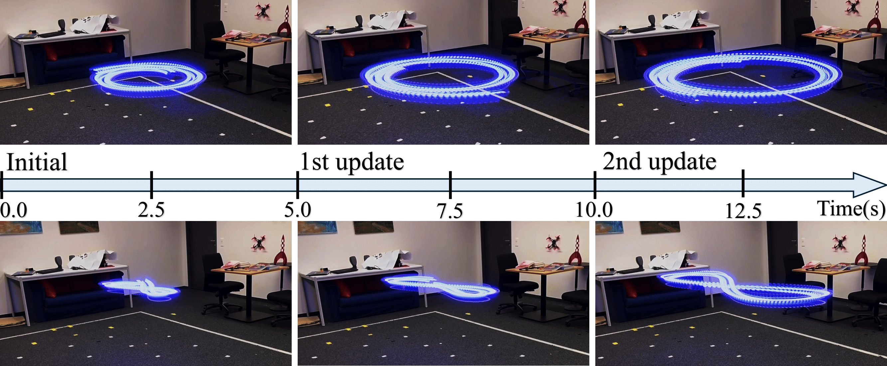
Jiahe Pan, Jiaxu Xing, Rudolf Reiter, Yifan Zhai, Elie Aljalbout, Davide Scaramuzza
IEEE Robotics and Automation Letters (RA-L), 2026
Project Page / Paper / Video / Code /
@Inproceedings{pan_learning_2026,
author = {Jiahe Pan and Jiaxu Xing and Rudolf Reiter and Yifan Zhai and Elie Aljalbout and Davide Scaramuzza},
booktitle = {IEEE Robotics and Automation Letters (RA-L)},
title = {Learning on the Fly: Rapid Policy Adaptation via Differentiable Simulation},
year = {2026},
month = {March},
url = {https://rpg.ifi.uzh.ch/lotf/},
}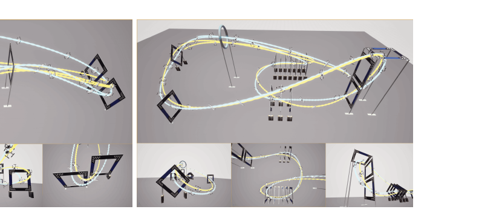
Chao Qin, Jiaxu Xing, Rudolf Reiter, Angel Romero, Yifan Lin, Hugh H.-T. Liu, Davide Scaramuzza
arXiv, 2026
Paper /
@Inproceedings{qin_perception_2026,
author = {Chao Qin and Jiaxu Xing and Rudolf Reiter and Angel Romero and Yifan Lin and Hugh H.-T. Liu and Davide Scaramuzza},
title = {Perception-Aware Time-Optimal Planning for Quadrotor Waypoint Flight},
year = {2026},
month = {March},
booktitle = {arXiv},
url = {https://arxiv.org/abs/2603.04305},
}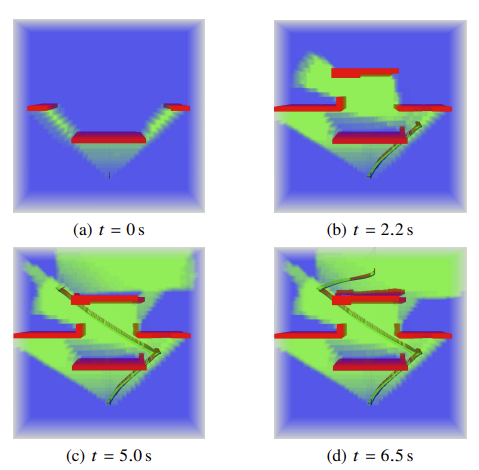
Yifan Zhai, Rudolf Reiter, Davide Scaramuzza
IEEE Robotics and Automation Letters (RA-L), 2026
Paper /
@Inproceedings{zhai_pamppi_2025,
author = {Yifan Zhai and Rudolf Reiter and Davide Scaramuzza},
title = {PA-MPPI: Perception-Aware Model Predictive Path Integral Control for Quadrotor Navigation in Unknown Environments},
year = {2026},
month = {March},
booktitle = {IEEE Robotics and Automation Letters (RA-L)},
doi = {10.1109/LRA.2026.3662653},
url = {https://doi.org/10.1109/LRA.2026.3662653},
}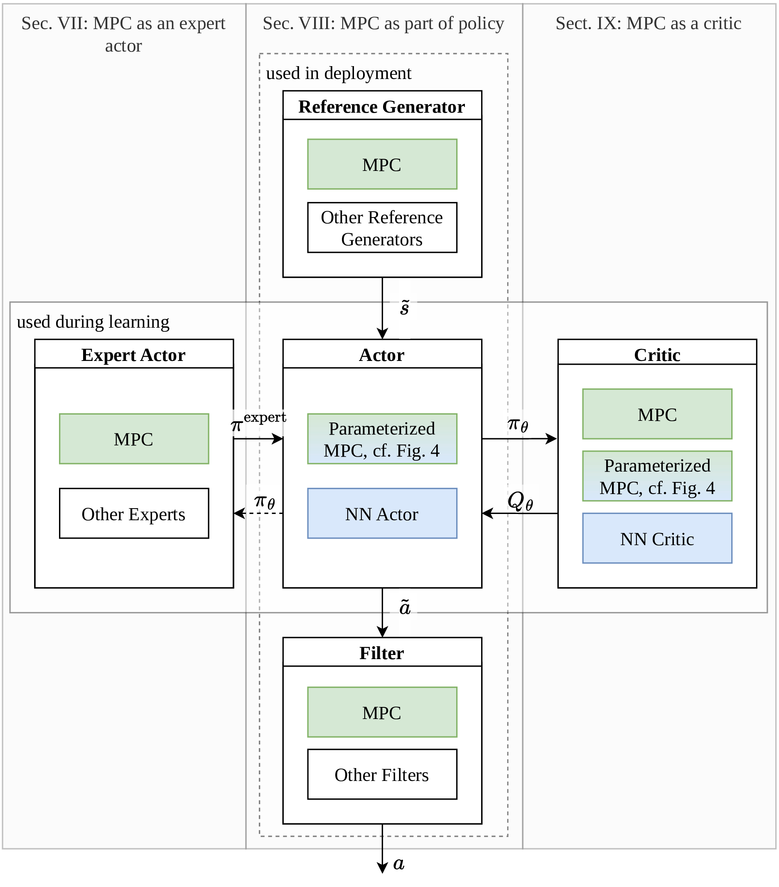
Rudolf Reiter, Jasper Hoffmann, Dirk Reinhardt, Florian Messerer, Katrin Baumgaertner, Shamburaj Sawant, Joschka Boedecker, Moritz Diehl, Sebastien Gros
Annual Reviews in Control, 2026
Paper /
@Inproceedings{reiter_synthesis_2026,
author = {Rudolf Reiter and Jasper Hoffmann and Dirk Reinhardt and Florian Messerer and Katrin Baumgaertner and Shamburaj Sawant and Joschka Boedecker and Moritz Diehl and Sebastien Gros},
title = {Synthesis of Model Predictive Control and Reinforcement Learning: Survey and Classification},
journal = {Annual Reviews in Control},
booktitle = {Annual Reviews in Control},
volume = {61},
pages = {101045},
year = {2026},
month = {February},
issn = {1367-5788},
doi = {https://doi.org/10.1016/j.arcontrol.2026.101045},
url = {https://www.sciencedirect.com/science/article/pii/S1367578826000015},
}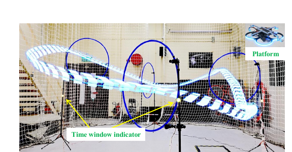
Shiying Dong, Zhipeng Shen, Rudolf Reiter, Hailong Huang, Bingzhao Gao, Hong Chen, Wen-Hua Chen
arXiv, 2026
Paper / Video /
@Inproceedings{dong_fast_2026,
author = {Shiying Dong and Zhipeng Shen and Rudolf Reiter and Hailong Huang and Bingzhao Gao and Hong Chen and Wen-Hua Chen},
title = {A Fast Semidefinite Convex Relaxation for Optimal Control Problems With Spatio-Temporal Constraints},
year = {2026},
month = {January},
booktitle = {arXiv},
url = {https://arxiv.org/abs/2601.03055},
}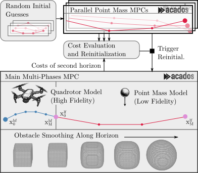
Rudolf Reiter, Chao Qin, Leonard Bauersfeld, Davide Scaramuzza
arXiv, 2025
Paper / Video /
@Inproceedings{reiter_unique_2025,
author = {Rudolf Reiter and Chao Qin and Leonard Bauersfeld and Davide Scaramuzza},
title = {Unifying Quadrotor Motion Planning and Control by Chaining Different Fidelity Models},
year = {2025},
month = {December},
booktitle = {arXiv},
url = {https://arxiv.org/abs/2512.12427},
}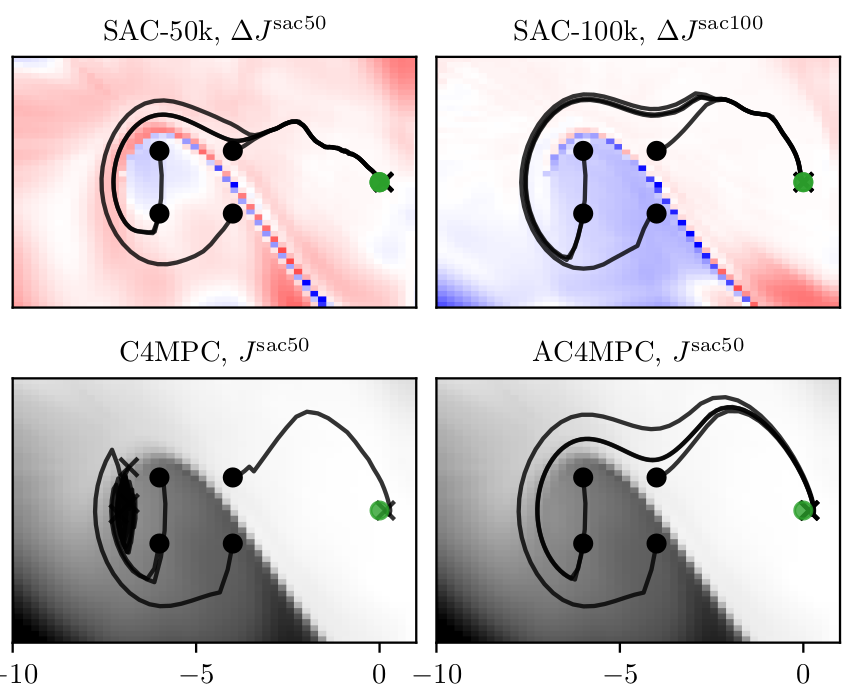
Rudolf Reiter, Andrea Ghezzi, Katrin Baumgärtner, Jasper Hoffmann, Robert D. McAllister, Moritz Diehl
IEEE Transactions on Control Systems Technology (TCST), 2025
Project Page / Paper /
@Inproceedings{reiter2024ac4mpc,
author = {Rudolf Reiter and Andrea Ghezzi and Katrin Baumgärtner and Jasper Hoffmann and Robert D. McAllister and Moritz Diehl},
title = {AC4MPC: Actor-Critic Reinforcement Learning for Nonlinear Model Predictive Control},
year = {2025},
month = {October},
booktitle = {IEEE Transactions on Control Systems Technology (TCST)},
doi = {10.1109/TCST.2025.3620521},
pages = {395-410},
url = {https://ieeexplore.ieee.org/document/11218987},
}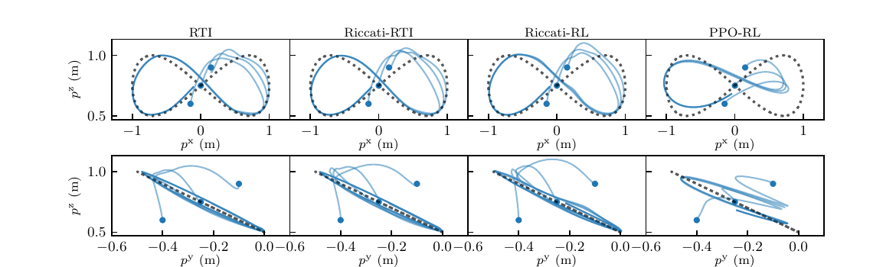
Andrea Ghezzi, Rudolf Reiter, Katrin Baumgärtner, Alberto Bemporad, Moritz Diehl
arXiv, 2025
Paper /
@Inproceedings{ghezzi_rollout_2025,
author = {Andrea Ghezzi and Rudolf Reiter and Katrin Baumgärtner and Alberto Bemporad and Moritz Diehl},
title = {Rollout Then Optimize: A One-Step Newton Refinement of Learned Policies for Nonlinear Model Predictive Control},
year = {2025},
month = {April},
booktitle = {arXiv},
url = {https://arxiv.org/abs/2504.02710},
}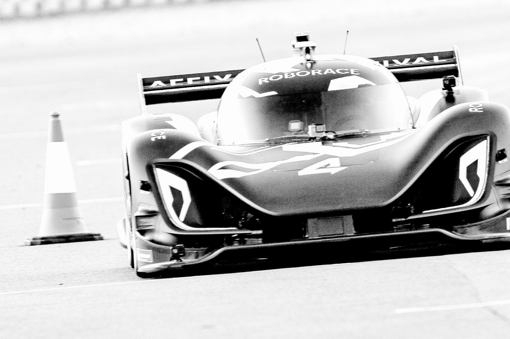
Rudolf Reiter
University of Freiburg, 2024
Paper /
@Inproceedings{Reiter2024optimization,
author = {Rudolf Reiter},
year = {2024},
month = {November},
school = {University of Freiburg},
booktitle = {University of Freiburg},
title = {Thesis: Optimization-based motion planning and obstacle avoidance for autonomous driving and racing},
url = {https://freidok.uni-freiburg.de/data/260722},
}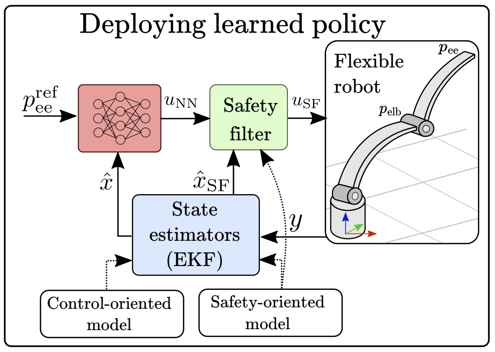
Shamil Mamedov, Rudolf Reiter, Seyed Mahdi B. Azad, Ruan Viljoen, Joschka Boedecker, Moritz Diehl, Jan Swevers
2024 IEEE/RSJ International Conference on Intelligent Robots and Systems (IROS), 2024
Paper / Video / Code /
@Inproceedings{mamedov_safety_2024,
author = {Shamil Mamedov and Rudolf Reiter and Seyed Mahdi B. Azad and Ruan Viljoen and Joschka Boedecker and Moritz Diehl and Jan Swevers},
booktitle = {2024 IEEE/RSJ International Conference on Intelligent Robots and Systems (IROS)},
title = {Safe Imitation Learning of Nonlinear Model Predictive Control for Flexible Robots},
year = {2024},
month = {October},
pages = {3613-3619},
url = {https://ieeexplore.ieee.org/document/10801854},
doi = {10.1109/IROS58592.2024.10801854},
}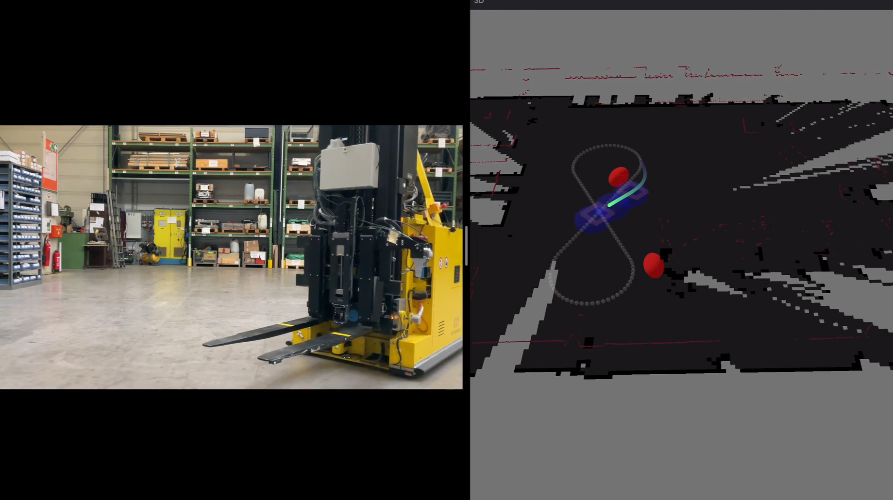
Akash Subash, Daniel Kloeser, Jonathan Frey, Rudolf Reiter, Moritz Diehl, Karsten Bohlmann
2024 IEEE/RSJ International Conference on Intelligent Robots and Systems (IROS), 2024
Paper / Video /
@Inproceedings{akash_model_2024,
author = {Akash Subash and Daniel Kloeser and Jonathan Frey and Rudolf Reiter and Moritz Diehl and Karsten Bohlmann},
booktitle = {2024 IEEE/RSJ International Conference on Intelligent Robots and Systems (IROS)},
title = {Model Predictive Control for Frenet-Cartesian Trajectory Tracking of a Tricycle Kinematic Automated Guided Vehicle},
year = {2024},
month = {October},
pages = {11948-11953},
doi = {10.1109/IROS58592.2024.10802822},
}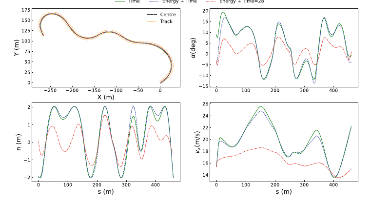
Wenliang Zhang, Lars Drugge, Mikael Nybacka, Jenny Jerrelind, Derong Yang, Rudolf Reiter, Jonathan Frey, Annika Stensson Trigell
16th International Symposium on Advanced Vehicle Control (AVEC), 2024
Paper /
@Inproceedings{zhang_energy_2024,
author = {Wenliang Zhang and Lars Drugge and Mikael Nybacka and Jenny Jerrelind and Derong Yang and Rudolf Reiter and Jonathan Frey and Annika Stensson Trigell},
title = {Energy and Time Optimal Control of Autonomous Vehicles by Using Frenet Frame Modelling and Over-Actuation},
booktitle = {16th International Symposium on Advanced Vehicle Control (AVEC)},
year = {2024},
month = {September},
pages = {447-453},
doi = {10.1007/978-3-031-70392-8_64},
url = {https://link.springer.com/chapter/10.1007/978-3-031-70392-8_64},
}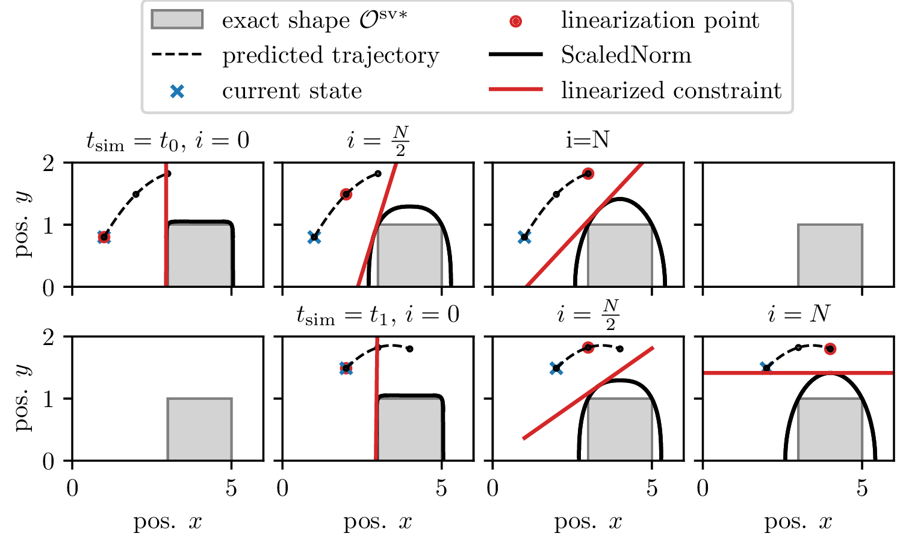
Rudolf Reiter, Katrin Baumgärtner, Rien Quirynen, Moritz Diehl
European Control Conference (ECC), 2024
Paper /
@Inproceedings{reiter_progressive_2024,
author = {Rudolf Reiter and Katrin Baumgärtner and Rien Quirynen and Moritz Diehl},
title = {Progressive Smoothing for Motion Planning in Real-Time NMPC},
booktitle = {European Control Conference (ECC)},
pages = {1816-1823},
doi = {10.23919/ECC64448.2024.10590824},
year = {2024},
month = {June},
}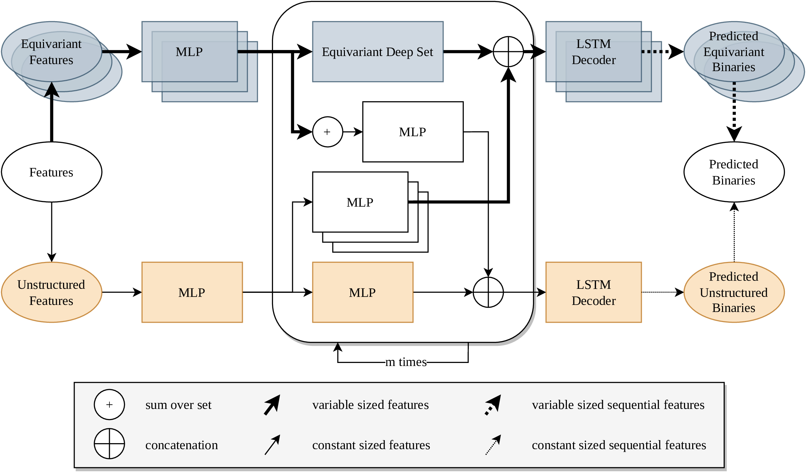
Rudolf Reiter, Rien Quirynen, Moritz Diehl, Stefano Di Cairano
IEEE Transactions on Control Systems Technology (TCST), 2024
Paper /
@Inproceedings{reiter_equivariant_2024,
author = {Rudolf Reiter and Rien Quirynen and Moritz Diehl and Stefano Di Cairano},
title = {Equivariant Deep Learning of Mixed-Integer Optimal Control Solutions for Vehicle Decision Making and Motion Planning},
booktitle = {IEEE Transactions on Control Systems Technology (TCST)},
doi = {10.1109/TCST.2024.3400571},
pages = {1-15},
issn = {1558-0865},
month = {May},
year = {2024},
}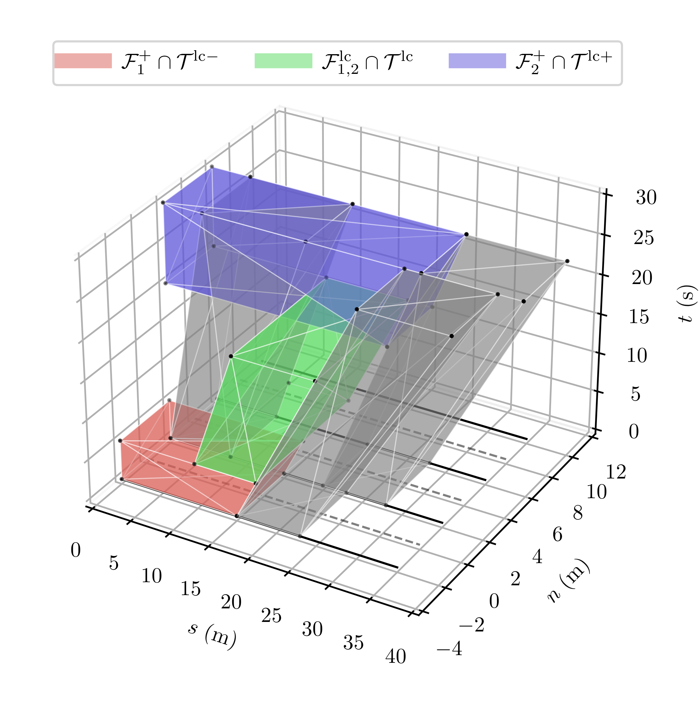
Rudolf Reiter, Armin Nurkanović, Daniele Bernardini, Moritz Diehl, Alberto Bemporad
IEEE Transactions on Intelligent Vehicles (TIV), 2024
Project Page / Paper /
@Inproceedings{reiter_long_short_term_2024,
author = {Rudolf Reiter and Armin Nurkanović and Daniele Bernardini and Moritz Diehl and Alberto Bemporad},
booktitle = {IEEE Transactions on Intelligent Vehicles (TIV)},
title = {A Long-Short-Term Mixed-Integer Formulation for Highway Lane Change Planning},
year = {2024},
month = {May},
issn = {2379-8904},
pages = {1-15},
doi = {10.1109/TIV.2024.3398805},
}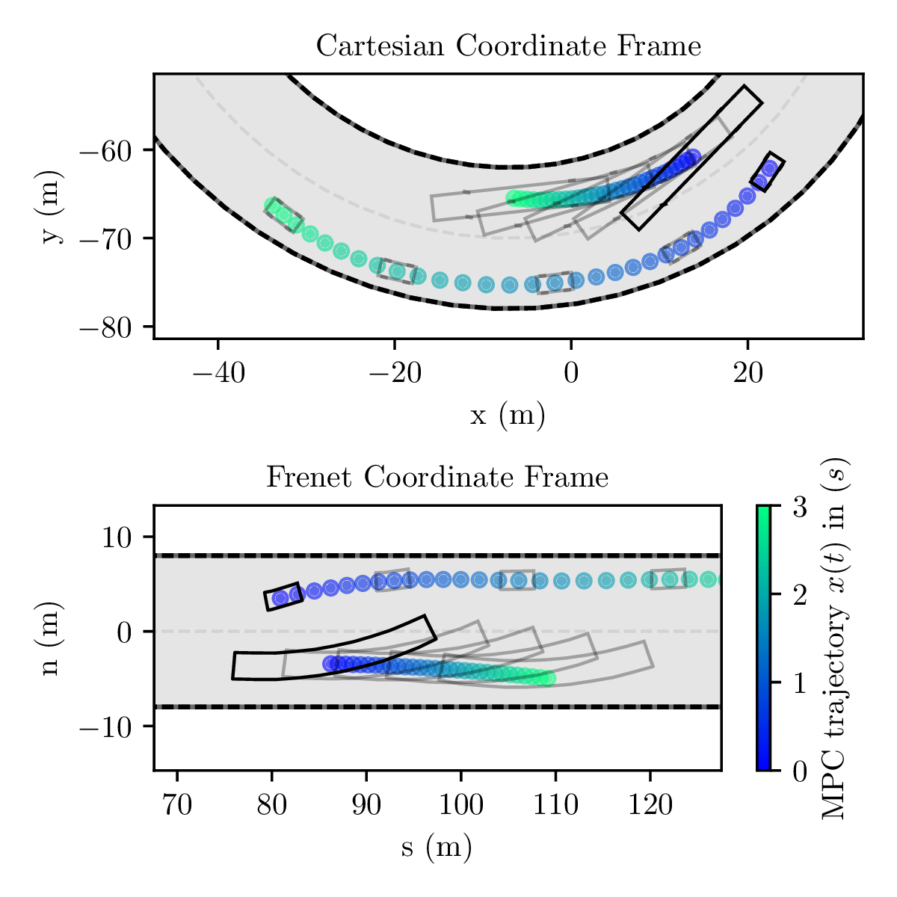
Rudolf Reiter, Armin Nurkanović, Jonathan Frey, Moritz Diehl
European Journal of Control, 2023
Paper /
@Inproceedings{reiter_frenet-cartesian_2023,
author = {Rudolf Reiter and Armin Nurkanović and Jonathan Frey and Moritz Diehl},
title = {Frenet-Cartesian model representations for automotive obstacle avoidance within nonlinear MPC},
issn = {0947-3580},
doi = {https://doi.org/10.1016/j.ejcon.2023.100847},
booktitle = {European Journal of Control},
year = {2023},
month = {November},
pages = {100847},
}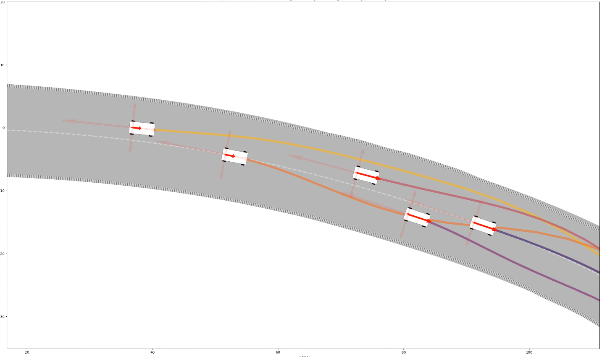
Rudolf Reiter, Jasper Hoffmann, Joschka Boedecker, Moritz Diehl
European Control Conference (ECC), 2023
Project Page / Paper / Video /
@Inproceedings{reiter_hierarchical_2023,
author = {Rudolf Reiter and Jasper Hoffmann and Joschka Boedecker and Moritz Diehl},
title = {A Hierarchical Approach for Strategic Motion Planning in Autonomous Racing},
doi = {10.23919/ECC57647.2023.10178143},
booktitle = {European Control Conference (ECC)},
month = {June},
year = {2023},
pages = {1--8},
}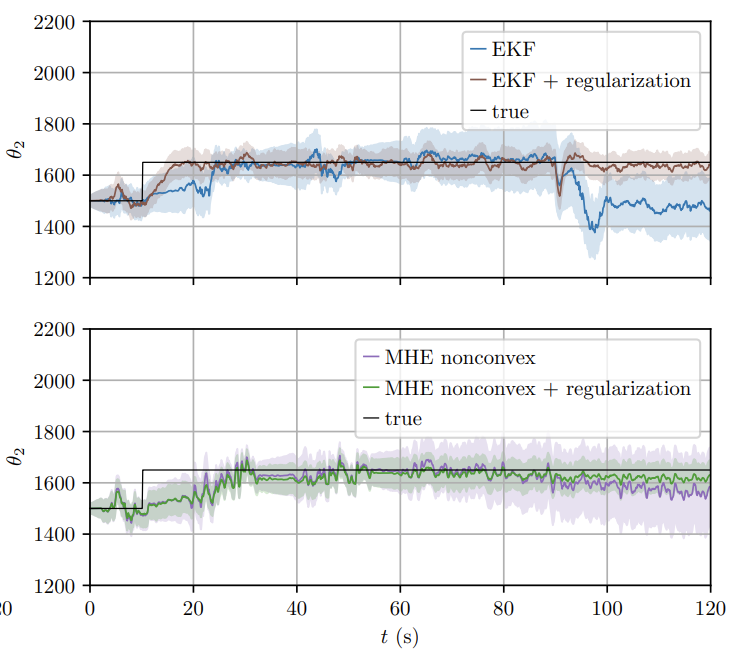
Katrin Baumgartner, Rudolf Reiter, Moritz Diehl
IEEE Conference on Decision and Control (CDC, 2022
Paper /
@Inproceedings{baumgartner_moving_2022,
author = {Katrin Baumgartner and Rudolf Reiter and Moritz Diehl},
address = {Cancun, Mexico},
title = {Moving Horizon Estimation with Adaptive Regularization for Ill-Posed State and Parameter Estimation Problems},
isbn = {978-1-66546-761-2},
doi = {10.1109/CDC51059.2022.9993416},
booktitle = {IEEE Conference on Decision and Control (CDC},
publisher = {IEEE},
month = {December},
year = {2022},
pages = {2165--2171},
}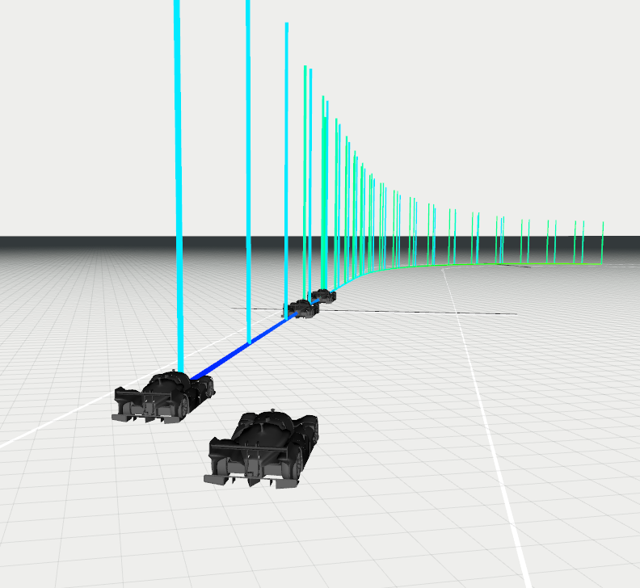
Rudolf Reiter, Florian Messerer, Markus Schratter, Daniel Watzenig, Moritz Diehl
European Control Conference (ECC), 2022
Paper /
@Inproceedings{reiter_inverse_2022,
author = {Rudolf Reiter and Florian Messerer and Markus Schratter and Daniel Watzenig and Moritz Diehl},
address = {London, United Kingdom},
title = {An Inverse Optimal Control Approach for Trajectory Prediction of Autonomous Race Cars},
isbn = {978-3-907144-07-7},
url = {https://ieeexplore.ieee.org/document/9838100/},
doi = {10.23919/ECC55457.2022.9838100},
booktitle = {European Control Conference (ECC)},
publisher = {IEEE},
month = {July},
year = {2022},
pages = {146--153},
}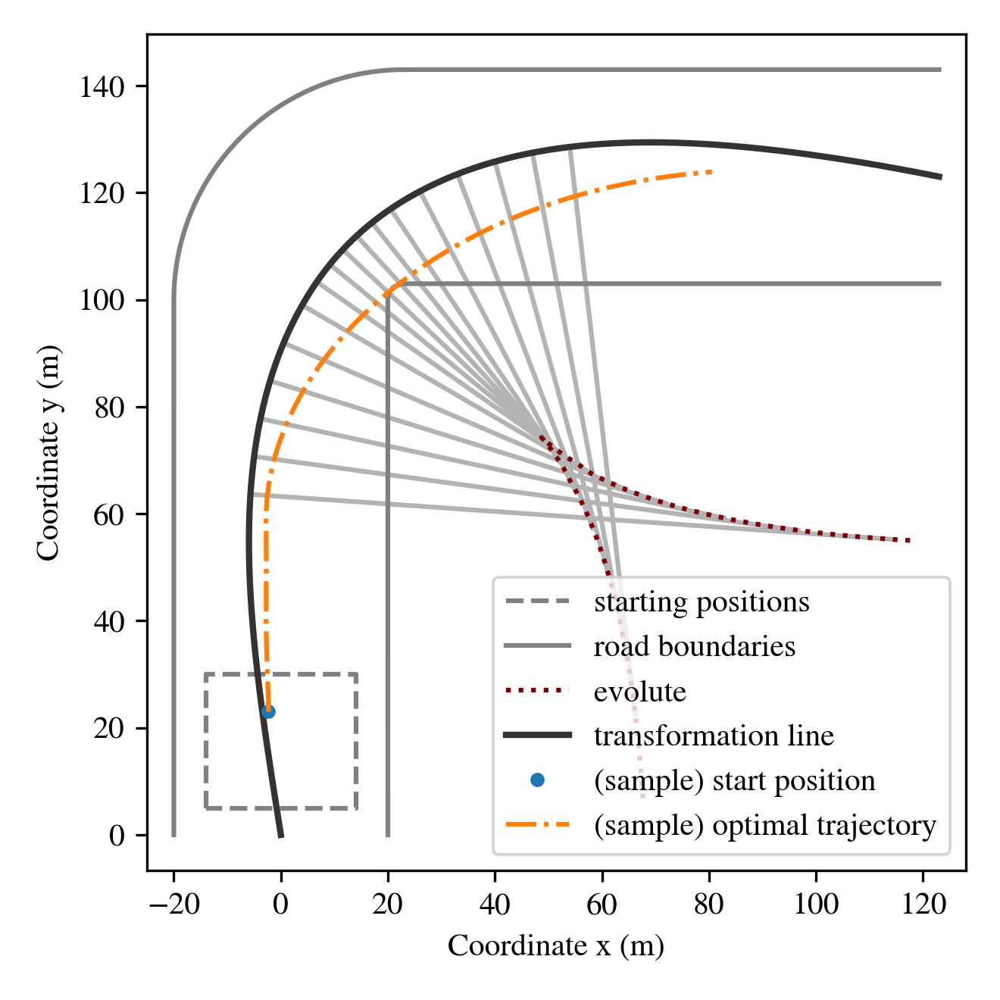
Rudolf Reiter, Moritz Diehl
European Control Conference (ECC), 2021
Paper /
@Inproceedings{reiter_parameterization_2021,
author = {Rudolf Reiter and Moritz Diehl},
address = {Delft, Netherlands},
title = {Parameterization Approach of the Frenet Transformation for Model Predictive Control of Autonomous Vehicles},
isbn = {978-94-6384-236-5},
url = {https://ieeexplore.ieee.org/document/9655053/},
doi = {10.23919/ECC54610.2021.9655053},
booktitle = {European Control Conference (ECC)},
publisher = {IEEE},
month = {June},
year = {2021},
pages = {2414--2419},
}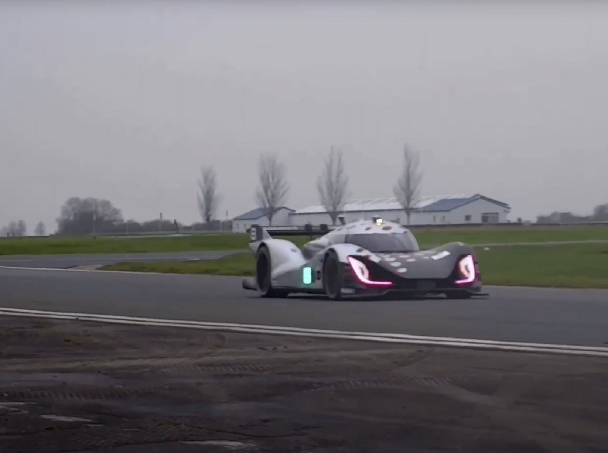
Rudolf Reiter, Martin Kirchengast, Daniel Watzenig, Moritz Diehl
IFAC Conference on Nonlinear Model Predictive Control (IFAC NMPC), 2021
Paper / Video /
@Inproceedings{reiter_mixed-integer_2021,
author = {Rudolf Reiter and Martin Kirchengast and Daniel Watzenig and Moritz Diehl},
series = {7th IFAC Conference on Nonlinear Model Predictive Control NMPC},
title = {Mixed-integer optimization-based planning for autonomous racing with obstacles and rewards},
volume = {54},
issn = {2405-8963},
doi = {10.1016/j.ifacol.2021.08.530},
number = {6},
booktitle = {IFAC Conference on Nonlinear Model Predictive Control (IFAC NMPC)},
month = {January},
year = {2021},
pages = {99--106},
}Talks
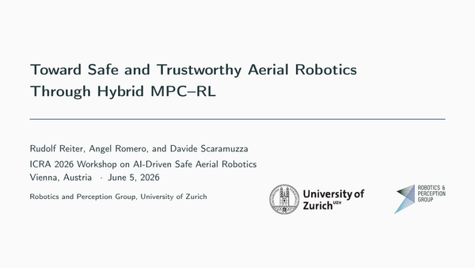
IEEE ICRA 2026 Workshop on AI-Driven Safe Aerial Robotics, Vienna, 2026
Slides
ETH Zurich, Advanced Model Predictive Control Invited Talks, Institute for Dynamic Systems and Control, 2025
Slides

Workshop on Systems, Control and Optimization, University of Freiburg, 2025
Slides
European Control Conference 2024, 2024
Slides
Systems Control and Optimization Laboratory, Workshop on Control, Optimization and Renewable Energy Systems, 2024
Slides
ETH Zurich, Coffee Talks, Institute for Automatic Control, 2024
Slides
ETH Zurich, Tech Talks, Institute for Dynamic Systems and Control, 2024
Slides

KTH Royal Institute of Technology, Transport Seminars, 2023
Slides
European Control Conference 2023, 2023
Slides
European Control Conference 2023, 2023
Slides
European Control Conference 2022, 2022
Slides
Homepage Template
This homepage is based on a template of Michael Niemeyer.